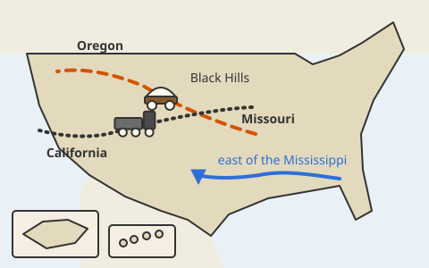
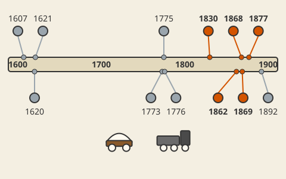

Besiedlung des Westens
Mit einem KI-Tutor lernen
Ein KI-Tutor erklärt dir diese Seite und hilft dir bei den Aufgaben. Wähl deinen Assistenten:
Mit Claude öffnen Mit ChatGPT öffnen Mit Mistral Vibe öffnen
Du nutzt dein eigenes Konto beim Anbieter. Der Assistent ist kein Angebot von lernapps.net: lernapps liefert nur Inhalte und Aufgaben. Die Wahl gilt für alle Seiten, nur auf diesem Gerät.
Wer lebte im Westen?
Sophie fragt Jayden nach den Menschen im Westen. Vorher eine Frage an dich.
Aufgabe
Lösung
Niemand, das Land war leer
Das Land war seit langer Zeit bewohnt.
Ein einziges Volk der Native Americans
Es gab viele Völker, zum Beispiel die Lakota.
Viele verschiedene Völker der Native Americans richtige Antwort
Es gab viele Nationen mit eigenen Sprachen.
Im Westen lebten viele Völker.
Das kannst du danach: Du beschreibst die Besiedlung des Westens und was sie für die Native Americans bedeutete.
Jayden erzählt vom Westen
- Sophie: Settlers moved to the West. Did anybody live there before?
- Jayden: Yes! Many Native American nations lived in the West and in the East. They had their own languages and homelands.
- Jayden: In 1830 the government passed the Indian Removal Act. About sixty thousand Native Americans from the south-east had to leave their homelands and move west of the Mississippi. Thousands died on the way. This is called the Trail of Tears.
- Sophie: And the settlers?
- Jayden: Many walked west in wagon trains. About four hundred thousand people took the long road to Oregon and California.
- Jayden: In 1862 the Homestead Act gave settlers one hundred and sixty acres for free, if they worked the land for five years. In 1869 the first railroad from coast to coast was ready.
- Sophie: What did all this mean for the Native Americans?
- Jayden: Many lost their land. In 1868 the government and the Lakota signed a treaty. It gave them a big reservation with the Black Hills. Then people found gold there, and the treaty was broken.
- Jayden: The Nez Perce under Chief Joseph did not want to give up their land. In 1877 they walked about twelve hundred miles and fought on the way.
- Sophie: Do Native Americans live in the USA today?
- Jayden: Of course! In 2024, more than three million people said they were American Indian or Alaska Native. They belong to many nations, for example the Cherokee, the Lakota or the Navajo.
| Englisch | Deutsch |
|---|---|
| the settler | der Siedler, die Siedlerin |
| the nation | die Nation, das Volk |
| the homeland | die Heimat, das Heimatgebiet |
| the wagon train | der Wagenzug |
| the acre | der Acre (Flächenmaß, 160 Acres sind etwa 65 Hektar) |
| for free | gratis |
| the reservation | das Reservat (Gebiet für eine Nation der Native Americans) |
| the treaty | der Vertrag |
| to give up | aufgeben |
| to belong to | gehören zu |
| the Homestead Act | der Homestead Act (ein Gesetz von 1862, das Siedlern Land gab) |
| the Indian Removal Act | der Indian Removal Act (ein Gesetz von 1830, das Völker zum Umzug zwang) |
| society | die Gesellschaft |
| American Indian or Alaska Native | so heißen Native Americans in den Zählungen der USA |
| Indigenous | indigen (Menschen, die zuerst dort lebten; das Wort kennst du von Kanada) |
Verstehen, belegen, meinen
Aufgabe
Lösung
Richtige Antwort: Die Aussage stimmt nicht.
Native Americans leben heute in den USA, mehr als drei Millionen Menschen gaben das 2024 an.
Aufgabe
Lösung
Zeile 9
Zeile 9 handelt von den Nez Perce.
Zeile 3
Zeile 3 handelt vom Trail of Tears.
Zeile 8 richtige Antwort
Hier steht, dass der Vertrag gebrochen wurde.
Zeile 6
Zeile 6 handelt vom Homestead Act.
Zeile 8: Gold in den Black Hills, dann der Vertragsbruch.
Offene Aufgabe
Der Westen wird besiedelt: Wer gewinnt, wer verliert? Schreibe drei Sätze auf Englisch, zum Beispiel mit „The settlers got … but the Native Americans …“.
Tipp
Schau in die Zeilen 6, 8, 9 und 11.
Eine gute Antwort enthält:
- Du nennst, was die Siedler gewannen, zum Beispiel Land oder die Eisenbahn. Nachlesen
- Du nennst, was die Native Americans verloren oder wie sie reagierten, zum Beispiel Land, Weg ins Reservat oder Widerstand der Nez Perce. Nachlesen
- Du sagst, dass Native Americans auch heute in den USA leben. Nachlesen
- Es sind ganze Sätze mit Punkt am Ende. (Form)
Lösung
The settlers got free land and a railroad, but many Native Americans lost their land. Some nations, like the Nez Perce, did not want to give up their homelands. Native Americans still live in the USA today.
Wagen, Bahn und Reservate

© CC-BY-4.0Schemakarte, nicht genau nach Maßstab. Norden ist oben. Orange: Weg der Wagenzüge, schwarz gepunktet: Eisenbahn, blau: Weg der Native Americans aus dem Osten.

© CC-BY-4.0Die Zeitachse wächst: Fünf neue Punkte liegen im 19. Jahrhundert.
Merke
Native Americans sind nicht ein Volk, sondern viele nations mit eigenen Sprachen. Sie leben bis heute in den USA. Frage bei jeder Aussage: Wer spricht, und was will diese Gruppe?
Übung
Aufgabe
Lösung
Richtige Antwort: 1. Der Indian Removal Act zwingt Völker zum Umzug nach Westen., 2. Siedler bekommen Land durch den Homestead Act., 3. Die Regierung und die Lakota schließen einen Vertrag., 4. Die Eisenbahn von Küste zu Küste ist fertig.
Indian Removal Act 1830, Homestead Act 1862, Vertrag mit den Lakota 1868, Eisenbahn 1869.
Aufgabe
Lösung
Richtige Antwort: We will get free land if we work it for five years. – Siedler; Reservations will help Native Americans to join the rest of American society. – die Regierung; We will not give up our land. – Nez Perce
Siedler nutzten den Homestead Act, die Regierung wollte Reservate, die Nez Perce wollten bleiben.
Aufgabe
Schreibe die Sätze auf Englisch.
Tipp
Achte auf die Zeit: früher oder heute? Nach had to steht die Grundform.
- Die Siedler zogen nach Westen.
- Viele Menschen mussten ihr Land verlassen.
- Native Americans leben heute in den USA.
Lösung
- The settlers moved to the west. (auch richtig: The settlers moved west.; The settlers went to the west.; The settlers went west.; The settlers walked to the west.; The settlers walked west.; The settlers travelled to the west.; The settlers travelled west.; The settlers traveled to the west.; The settlers traveled west.; The settlers headed to the west.; The settlers headed west.; The settlers came to the west.; The settlers came west.)
- Many people had to leave their land.
- Native Americans live in the USA today. (auch richtig: Native Americans live in the United States today.; Native Americans live in the US today.)
Aufgabe
Hör zu und schreibe, was du hörst.
Tipp
Hör jeden Satz zweimal.
- KI
- KI
- KI
Lösung
- The wagon train left from Missouri.
- Native American nations have their own governments today.
- The railroad crossed the whole country.
Selbst sprechen
Aufgabe
Hör zu, sprich nach und nimm dich auf. Vergleiche dann mit dem Original.
Tipp
Sprich langsam nach. Achte auf Navajo, Cherokee und languages.
- They wanted to finish the trip in one warm season.KI
- The Navajo and the Cherokee are two different nations.KI
- Today people speak many Native American languages.KI
Zum Aufnehmen braucht diese Aufgabe JavaScript. Die Beispiele kannst du auch ohne anhören.
Lösung
- They wanted to finish the trip in one warm season.
- The Navajo and the Cherokee are two different nations.
- Today people speak many Native American languages.
Nächster Halt
Der letzte Halt liegt in Washington, D.C. (zurück im Jahr 1789). Wer entscheidet in den USA? Das zeigen Präsident, Kongress und Verfassung.
Fehler gefunden oder eine Idee für diese App?